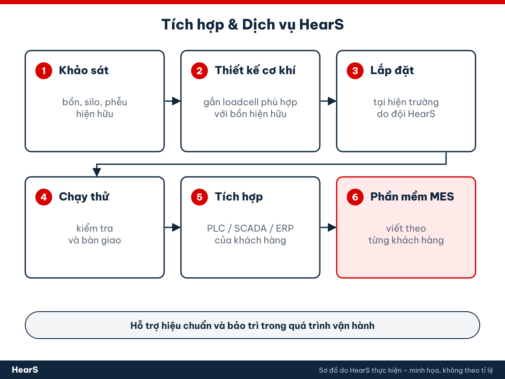
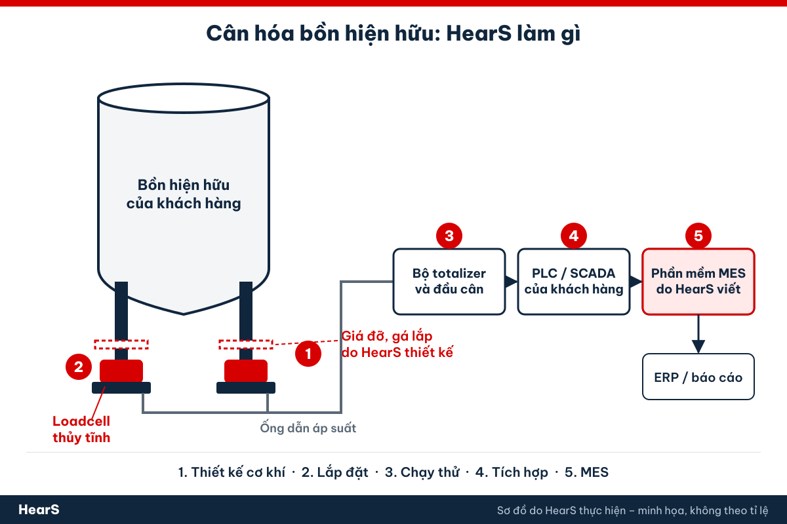

Giải pháp HearS
Giải pháp HearS
Giải pháp do HearS đóng gói. HearS tự thiết kế cơ khí, lắp đặt, chạy thử, tích hợp và viết phần mềm MES cho từng khách hàng. HearS chọn thiết bị phù hợp cho từng bài toán và làm toàn bộ phần kỹ thuật xung quanh.

HearS đóng gói những gì
Tích hợp & Dịch vụ HearS
Thiết kế cơ khí để gắn loadcell vào bồn, silo, phễu hiện hữu; lắp đặt; chạy thử; tích hợp PLC, SCADA hoặc ERP; phần mềm MES theo yêu cầu; hỗ trợ hiệu chuẩn và bảo trì.
Tích hợp & Dịch vụ: Tích hợp & Dịch vụ HearSĐiện mặt trời
Tấm pin, inverter và lưu trữ điện cho nhà máy, trang trại — bơm nước năng lượng mặt trời cho tưới tiêu và cấp điện cho điểm cân không điện lưới.
Điện mặt trời: Điện mặt trờiCân silo cám trang trại không cần điện lưới
Đang nghiên cứu tính khả thi cùng ANDUOR (đối tác điện mặt trời và lưu trữ). Loadcell thủy tĩnh dưới chân silo, tủ điện năng lượng mặt trời, số liệu tồn cám gửi về điện thoại. Chưa phải sản phẩm đã bàn giao.
Nghiên cứu khả thi: Cân silo cám trang trại không cần điện lướiGiải pháp tưới tiêu off-grid – Chi nhánh Đắk Lắk HearS
Giải pháp của Chi nhánh Đắk Lắk: dàn pin mặt trời chạy máy bơm cho rẫy cà phê, tiêu, sầu riêng xa điện lưới, kèm bồn chứa và ống nhỏ giọt. Đã triển khai demo tại một số công trình, sẵn sàng cung cấp.
Tưới tiêu off-grid: Giải pháp tưới tiêu off-grid – Chi nhánh Đắk Lắk HearSCân quét mã & phế liệu
Quét mã QR trên hàng hóa, cân và ghi lại kết quả — gồm phế liệu theo máy, loại và người vận hành. Hợp tác cùng CCSS E-Tools; phạm vi thỏa thuận theo từng dự án.
Cân quét mã & phế liệu: Cân quét mã & phế liệu
Thiết bị cân: Emery Winslow Scale
HearS cung cấp các giải pháp cân của Emery Winslow Scale. Trong các giải pháp HearS, loadcell thủy tĩnh của Emery Winslow Scale là thiết bị đo. Phần thiết kế cơ khí, tủ điện, nguồn, truyền thông và phần mềm do HearS thực hiện và không phải sản phẩm của Emery Winslow Scale.
Cân bàn: cân bàn dòng 437 — tải trọng và tùy chọn xem tại trang của nhà sản xuất.

Giải pháp theo ngành, theo nhu cầu cân
Sáu giải pháp ngành, xếp theo sản lượng mà Việt Nam thực sự cân mỗi ngày — thứ tự mà khảo sát thị trường của HearS ủng hộ.
Xi măng & cốt liệu
61 nhà máy và kỷ lục 112 triệu tấn tiêu thụ năm 2025: tệp cân xe và cân silo nhiều bụi nhất cả nước.
Xi măng & cốt liệu: Xi măng & cốt liệuKhai khoáng — than & bauxite
Than bán theo tấn trong bùn, ngập và sét, từ Quảng Ninh đến Tây Nguyên.
Khai khoáng — than & bauxite: Khai khoáng — than & bauxiteNhà máy thức ăn chăn nuôi
Khoảng 265 nhà máy với cùng các điểm cân silo, phễu, phối liệu — và bụi ngũ cốc dễ nổ.
Nhà máy thức ăn chăn nuôi: Nhà máy thức ăn chăn nuôiDầu khí & LPG
Cân bồn chứa, bồn hình cầu và trạm chiết nạp nơi khí dễ cháy là điều kiện bình thường.
Dầu khí & LPG: Dầu khí & LPGHóa chất & phân bón
Cân bồn chống ăn mòn cho kiểm soát quá trình, ở quy mô Phú Mỹ và Cà Mau.
Hóa chất & phân bón: Hóa chất & phân bónChế biến thủy sản
Cân chịu rửa áp lực, nước muối và kho lạnh cho 868 cơ sở xuất khẩu.
Chế biến thủy sản: Chế biến thủy sản
Quý khách có bồn hoặc silo hiện hữu cần cân?
Vui lòng cho chúng tôi biết loại bồn, hiện trường và hệ thống Quý khách đang dùng. HearS sẽ đề xuất thiết kế và phạm vi.
Muốn trao đổi trước? Gửi ảnh chiếc cân hiện tại của Quý khách qua Zalo — +84 964 854 246 — HearS tư vấn trước, báo giá sau.